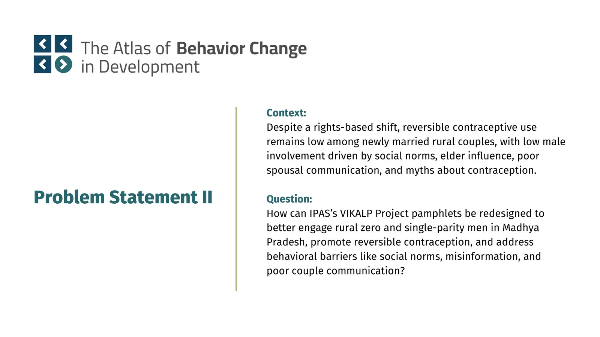
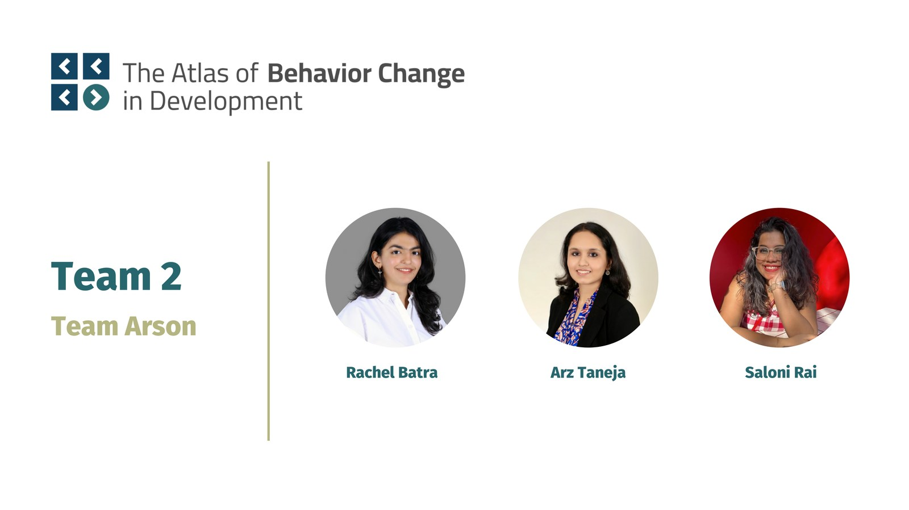
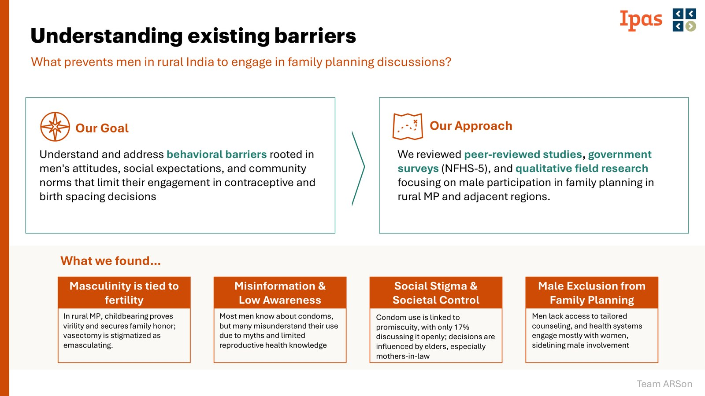
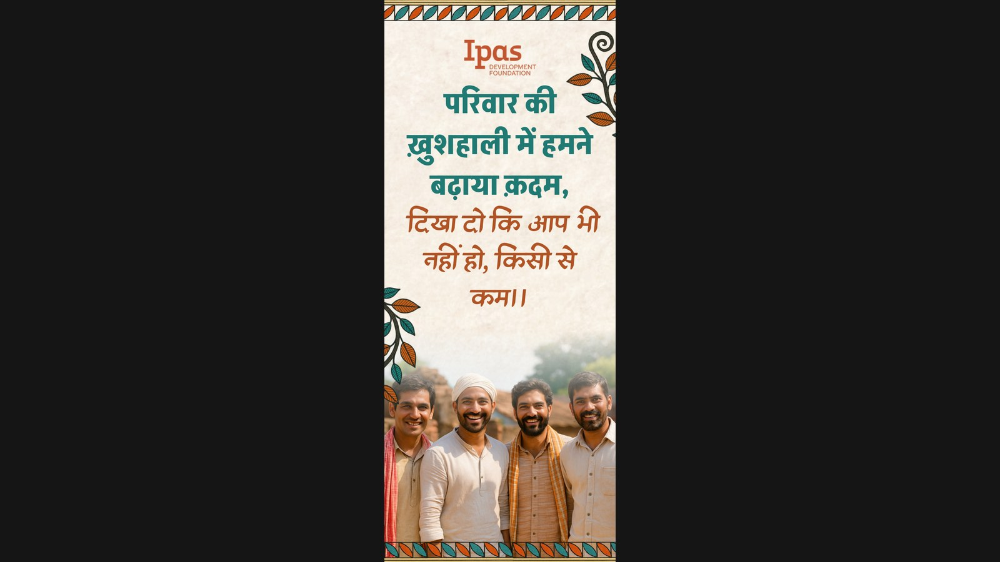
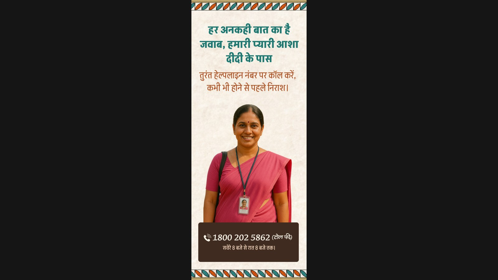
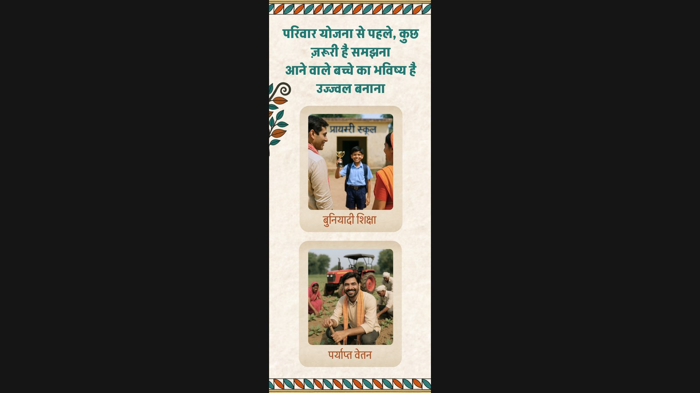
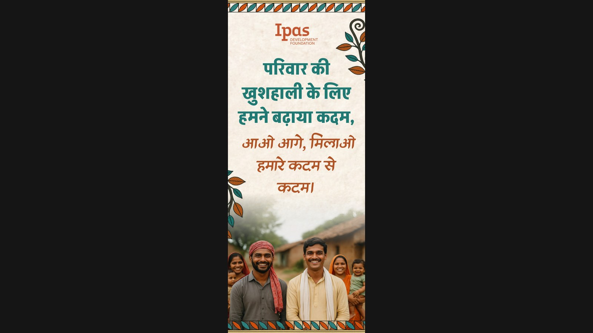
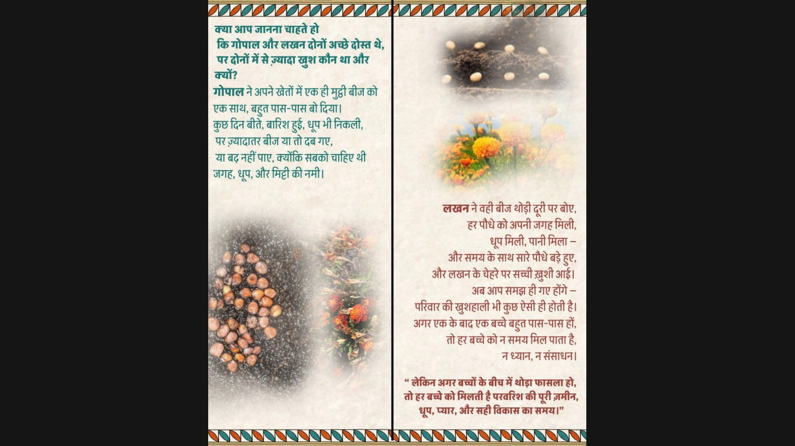
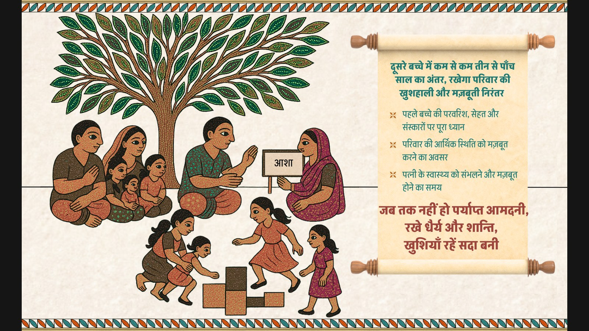

Development Communication Hackathon 2025 · Team ARSon
Vikalp
Two Hindi print pamphlets for rural men aged 18–24 in Madhya Pradesh, one for zero parity and one for single parity, so family planning is not only a woman’s job. IPAS Development Foundation, VIKALP. Close gate fold. The Atlas of Behavior Change in Development was the competition, not the name of the work.

| Brief | IPAS Development Foundation · VIKALP · Problem Statement 2 |
|---|---|
| Place | Rural Madhya Pradesh |
| Audience | Married men 18–24, zero parity and single parity |
| Team | ARSon: Rachel Batra, Arz Taneja, Saloni Rai |
| Language | Hindi |
| Round | National finals, Development Communication Hackathon 2025 |
The brief

India’s family-planning programme has moved toward a rights-based frame. Reversible methods still sit low, especially among newly married and low-parity couples in rural areas. Male sterilisation is under 1% of sterilisations. About 10% of men use condoms. The work of contraception stays with women.
VIKALP’s ask was two separate four-page print pamphlets. Zero-parity men: delay the first child by at least two years. Single-parity men: space the second by at least three. A slogan that sticks. A call to the Vikalp helpline or the local ASHA. Hindi. Print-first.
The finals deck put the question this way: how can IPAS’s VIKALP pamphlets be redesigned to engage rural zero- and single-parity men in Madhya Pradesh, promote reversible contraception, and address social norms, misinformation, and poor couple communication?
Who was in the room

Team ARSon at the national finals: Rachel Batra, Arz Taneja, Saloni Rai. The Atlas of Behavior Change in Development. Problem Statement 2 sat with IPAS, not with ABCD the organisation; ABCD’s Nirat Bhatnagar was on the jury.
What the research was for
The behavioural research document is titled Understanding Inhibitors of Male Involvement in Family Planning in Rural Madhya Pradesh. Despite investments in family planning, contraceptive responsibility in India remains mostly on women. Government messaging increasingly names men’s role. Interventions rarely engage them in a way that means anything on the ground. In Madhya Pradesh, gender norms and community structures keep male contraception use low.
In rural MP, 35% of men aged 15–49 see contraception as a woman’s concern, while 56% know condoms prevent pregnancy if used properly. Village elders, panchayat leaders, peers, and local healers shape what counts as possible. Elder family members, especially mothers-in-law, often want early childbirth and large families for economic and social security. That limits young couples’ autonomy and keeps men off the page.
The objective in the note is specific: design pamphlets that encourage male involvement among rural men aged 18–24, after looking at the psychological and socio-cultural barriers that actually sit in the way. Two brochures, one visual family, two life stages. The exercise is standalone and behaviour-first. It draws on IPAS collateral. It does not rewrite those sheets. The path was problem, then message, then execution.

On the walkthrough deck we wrote the barriers down as four clusters. Fertility is tied to masculinity; vasectomy is read as emasculating. Most men know about condoms and still misunderstand them. Condom use is linked to promiscuity; only 17% discuss it openly; elders, especially mothers-in-law, sit in the decision. Health systems talk mostly to women. Men do not get counselling built for them.
The frameworks we used to move from that list to a pamphlet: role modelling (self-efficacy), descriptive norms (peers), prompted reflection, and if-then prompts for follow-through. The visual brief on top of that: high contrast and large type for outdoor reading, colloquial Hindi instead of clinical copy, Gond-related motifs from MP, warm hues.
Creative rationale
The brochure uses behavioural principles with visuals and language from MP. It portrays men as informed decision-makers. Familiar idioms, emotional framing, and Gond art are there to make the piece feel local, stay in memory, and give behaviour change somewhere to sit.
Fold
Close gate fold, so the read has a path. The first page is curiosity. The partial open adds context. The full sheet is the ask. Four parts: cover (C), back (B), first fold (F1), second fold (F2). Zero-parity is B1. Single-parity is B2.
Affective priming
The structure follows affective priming: an emotional stimulus shapes how later messages land. The cover line appeals to masculine pride without threatening identity. Social comparison, used in male-focused health campaigns, is the mechanism. Feeling comes before the argument. F1 and F2 then carry benefits and guidance.

The cover is a challenge, not a lecture: परिवार की ख़ुशहाली में हमने बढ़ाया क़दम, दिखा दो कि आप भी नहीं हो, किसी से कम।
Design and visuals
Two artistic registers, one Gond-inspired border so both pamphlets belong to the same programme. Copy and story change with life stage. Earthy, muted tones for village settings. Warm reds, oranges, yellows for reading outside. Akshar for headings and key lines, because it stays legible without dropping cultural familiarity. Alkatra on the cover question, because it has to stop the eye.
Cover, back, and F1 use faces meant to read as men in the village, for trust and identification. Direct gaze for recall. The research note is explicit that those faces were generated on open-source tools as synthetic stand-ins, not photographs of named people. The back is an ASHA didi, named in the walkthrough as Sakhi, with the helpline 1800 202 5862, 8am to 8pm, toll-free.

F2, tradition in the conversation
The last fold is a Gond-style village under a tree: rootedness, collective wisdom, traditional values. Gond is native to MP and already a narrative form, which is why it is the visual language instead of a clinic poster. Colour is there to hold attention in a rural read. At the centre, ASHA in a pink sari, talking. The tree is a non-judgmental place to put contraception as a shared concern. Children on hopscotch, so the conversation is allowed to look like a future, not a scold. A scroll carries the actions. Cultural familiarity, visual weight, a place for the eye to land.
Zero parity
Delay the first child. F1 uses peer learning: the same faces as the cover, looking back on the wait. That is descriptive norms. The beats before a child are ordinary ones: time for the marriage, both earning, staying off tobacco, liquor, and gambling, taking up schemes that already exist. The refrain: जल्दी न करें, थोड़ा रुक जाएँ, सेहत, सुख और सुकून सब पाएँ.

F2, already on the hero, is the Gond village, ASHA in the talk, children playing, scroll with the actions.
Single parity
Space the next child. F1 is a farming story, because that is work people already know. Gopal sows a fist of seed too close; most fail. Lakhan leaves room; the plants take. Marigolds stand in for children: they need gap, sun, and water. Visual framing, so spacing is not an abstract public-health sentence. The copy says a family is the same. Children born too close compete for time and care.



Messaging and tone
Both brochures are male-centric, not to leave women out, but because reproductive health communication has long spoken past men. In rural contexts men still hold a large share of the decision. The cover puts them as partners who can take a share of the choice. Characters and settings (a couple saving for school fees, farmers named Gopal and Lakhan) are there so a reader can find his own life in the sheet. Identification, then retention, on a topic that is often treated as peripheral or taboo.
Clarity over load. Optimistic, not fear or guilt. Identity-affirming copy has a better chance of lasting. Colloquial Hindi, because that is how the men speak, and because it cuts cognitive effort. Light humour, rhythmic lines, familiar expressions. The pamphlets are print-first. No new organisation brand on top of IPAS. The logo stays.
What this is not
This is not a claim about uptake in the field. It is the research note, the two Hindi pieces, and the walkthrough we took to the hackathon. The public gallery is on Behance.